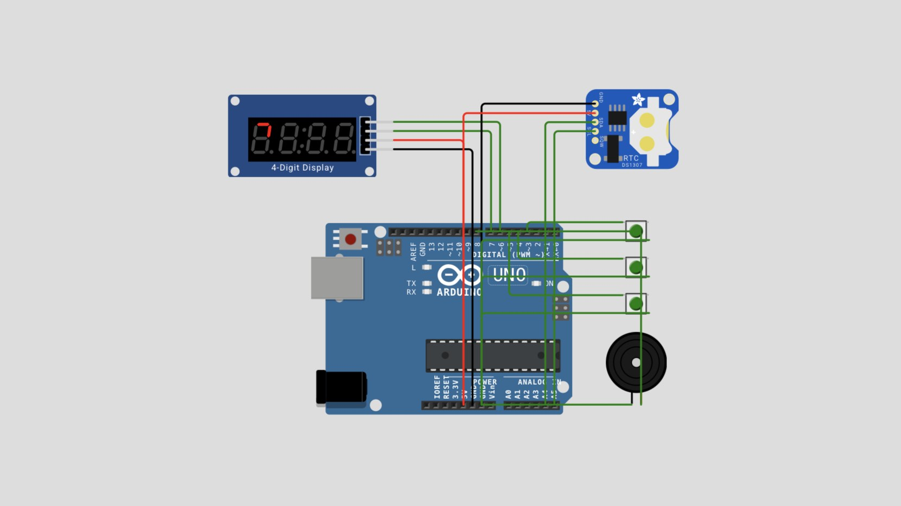
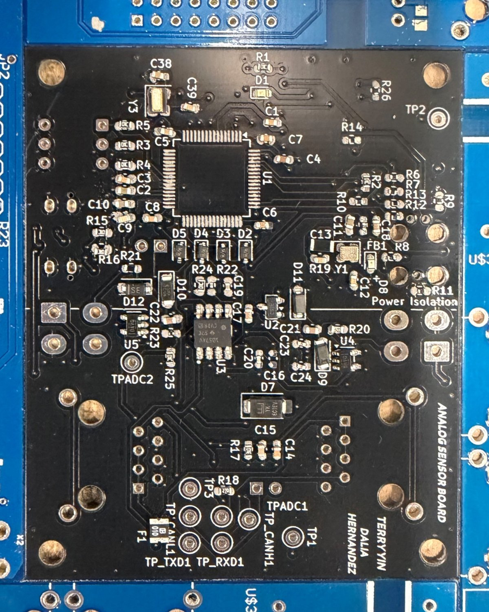

Projects
What I've worked on so far at Georgia Tech, on my own and with Solar Racing. Newest at the top. I'll keep adding to this.
-

Discovery Project · Fall 2026Arduino digital alarm clock
My first project of my own. It's a digital clock with an alarm, running on an Arduino Nano. I wrote the firmware as a state machine, tested it in the Wokwi simulator, and I'm now wiring it up on a breadboard.
Arduino · C++ · Wokwi · DS1307 RTC · TM1637 display · GitHub -
 Solar Racing · Fall 2026
Solar Racing · Fall 2026Display board firmware
A partner and I updated the driver display firmware for Halo, the team's new car, and tested each change on the bench with CANalyzer.
C · TI Tiva · CAN bus · CANalyzer -

Solar Racing · Fall 2026Analog sensor board
I assembled an analog sensor board from a bare PCB, then tracked down every bad joint and wrong part with a multimeter and the KiCad layout.
Solder paste · Reflow oven · Hand soldering · KiCad · Multimeter -
coming spring 2027Solar Racing · Up next
Custom PCB and schematic
Once the display board firmware is moved over to STMLib, the next step is designing a new board for it from scratch, both the schematic and the PCB. It's the most hardware-heavy thing I'll have done so far, and I'm looking forward to it.
KiCad · STM32 · schematic capture · PCB layout